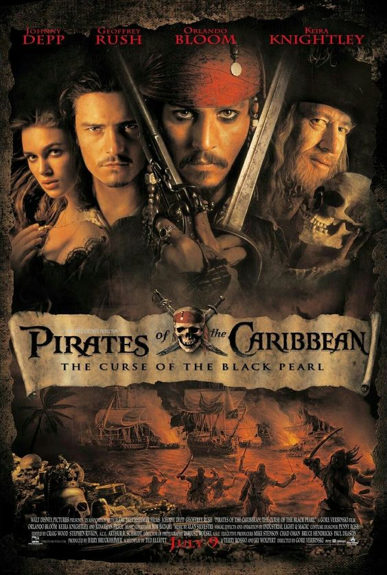

|  | Piratas do Caribe: A Maldição do Pérola Negra
Direção: Gore Verbinski
Roteiro Jay Wolpert, Stuart Beattie
Elenco: Johnny Depp, Geoffrey Rush, Keira Knightley
Em pleno século XVII, o pirata Jack Sparrow (Johnny Depp) tem seu navio saqueado e roubado pelo capitão Barbossa (Geoffrey Rush) e sua tripulação. Com o navio de Sparrow, Barbossa invade e saqueia a cidade de Port Royal, levando consigo Elizabeth Swann (Keira Knightley), a filha do governador (Jonathan Pryce). Decidido a recuperar sua embarcação, Sparrow recebe a ajuda de Will Turner (Orlando Bloom), um grande amigo de Elizabeth que parte em seu encalço. Porém, o que ambos não sabem é que o Pérola Negra, navio de Barbossa, foi atingido por uma terrível maldição que faz com que eles naveguem eternamente pelos oceanos e se transformem em esqueletos à noite. |
|
Acesse mais em YouTube SESSÕES
|